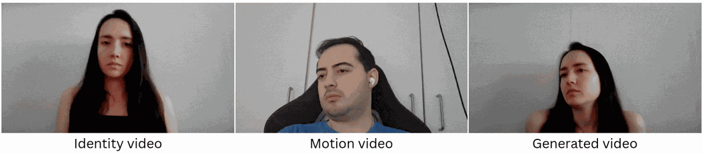
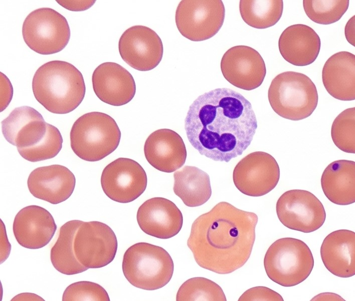
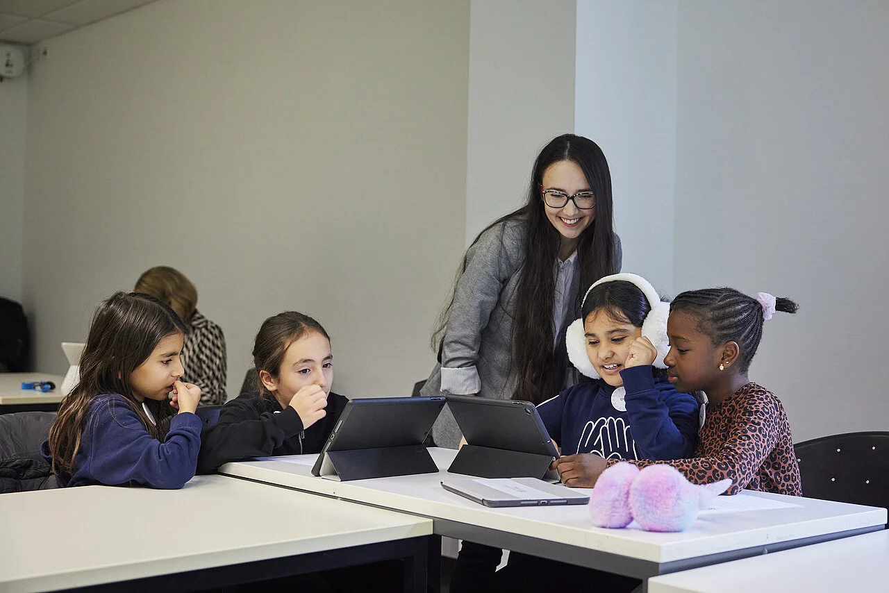

Machine Learning & Applied AI Researcher
Building intelligent, embodied systems that actively engage and augment human capabilities — from multimodal LLM architectures to federated learning frameworks and advanced computer vision pipelines.
About
Machine Learning and Applied AI Researcher, combining a deep technical foundation in machine learning with dual Master's degrees in Mechatronics (TU Budapest) and Robotics, Cognition, Intelligence (TU Munich). I specialize in developing multimodal LLM architectures, federated learning frameworks, and advanced computer vision pipelines.
During my PhD, supported by a bidt scholarship and carried out as a member of the Munich Center for Machine Learning (MCML), I worked across many different areas united by a single focus: improving online learning, whether through a trained ML algorithm running quietly in the background or through software that learners interact with directly. This work spans deep learning and multimodal data, including an online lecture tutor built around an embedded LLM tutor that gives students accurate, immediate feedback as they learn.
Beyond algorithmic research, I am deeply passionate about human-AI interaction, and building production-ready systems that bridge the gap between complex theoretical models and tangible, real-world applications. My ultimate drive is to build intelligent, embodied systems that actively engage and augment human capabilities — designing useful applications that move the world forward, ease burdens, and support the people doing essential work.
I am also a team member of the TUM EdTech Center, where I help organize events and programs that bring AI in education to a wider audience.
Research
My research investigates adaptive learning technologies, cognitive load, and the role of physiological signals in understanding and supporting learning processes. I am interested in building systems that respond to users in real time, and in understanding the ethical implications of doing so.
Publications
TurboSVM-FL: Boosting Federated Learning through SVM Aggregation for Lazy Clients
*These authors contributed equally.
*These authors contributed equally.
What Are We Measuring? Trivial Baselines and the Observability Ceiling in Video-Based Mind Wandering Detection

User Intent Recognition and Satisfaction with Large Language Models: A User Study with ChatGPT
Full list on Google Scholar.
Intellectual Property

Patent
Systems and Methods for Classifying Blood Cells
Inventors: Slobodan Ilic, Anna Bodonhelyi, Thomas Engel, Gaby Marquardt,
Agnieszka Maria Tomczak.
Application No. WO2023US80249.
Open Data
Dataset
User Intent Recognition and Satisfaction with Large Language Models: A User Study with ChatGPT
A Prolific-recruited, gender-balanced user study (ages 18+, based in Germany) comparing GPT-3.5 and GPT-4 as conversational assistants: 116 participants (Mage = 30.4, SD = 8.9) completed the GPT-3.5 condition and 95 (Mage = 28.7, SD = 8.1) completed the GPT-4 condition, after exclusions for consistency and data-quality checks. Includes only the anonymized conversational logs collected under informed consent.
View dataset · View paperDataset
Automatic Mind Wandering Detection in Educational Settings: A Systematic Review and Multimodal Benchmarking
An eye-tracking dataset for mind wandering detection (N = 56; Mage = 26.23, SD = 5.50), recorded at 1000 Hz with an EyeLink 1000 Plus as participants watched instructional videos on derivatives, self-reported mind wandering via key press, and completed a retention test one week later.
View dataset · View paperTeaching
Human-AI Interaction Exercises
Project Week: AI-Powered Real-Time Support for Self-Paced Study
Seminar Berufliche Bildung: "Videogeneration with AI"
Project Week: AI-Powered Real-Time Support for Self-Paced Study
MSc Thesis: From Classical Pipelines to Vision-Language Models: A Multimodal Benchmark for Automated Counseling Skills Assessment in Teacher-Parent Educational Conversations
MSc Thesis: Enhancing Detection of Mind Wandering and Disengagement Using LLMs and Federated Learning
MSc Thesis: Benchmarking Machine Learning Approaches for Detecting Mind Wandering: A Comparative Review of Methods and Datasets
MSc Thesis: Large Language Models in Medical Research and Training
Interdisciplinary Project: Enhanced Evaluation of e-Learners' Mind State Concentration with Machine Learning
Outreach
Organization of the International Symposium on the Future of Learning: "Future Learning: Global Perspectives, European Pathways"
CHI paper presentation: "From Passive Watching to Active Learning: Empowering Proactive Participation in Digital Classrooms with AI Video Assistant"
Keynote speech: "From Passive Watching to Active Learning: Strengthening Proactive Participation with LLM-Based Assistants" at the Automated Assessment of Teaching Effectiveness Using Multimodal Data workshop
3-day workshop in collaboration with the Roland Berger Stiftung

Source: Roland Berger Stiftung
Workshop at Grundschule am Winthirplatz
Workshop in Elmau: "Kreativ mit KI"
AAAI poster presentation in Vancouver
TUM EdTech Webinar: "Generative AI in Academia"
Organization of the WiDS Munich event
Contact
I welcome collaboration, questions about my research, or conversations about educational technology and human-AI interaction.